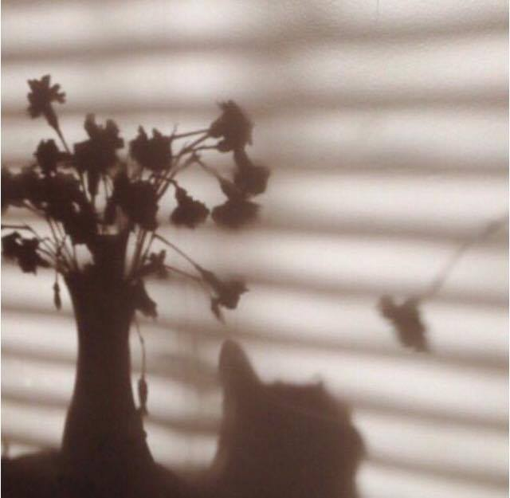
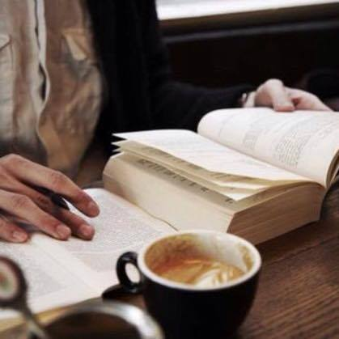
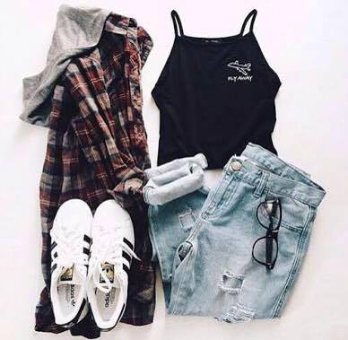
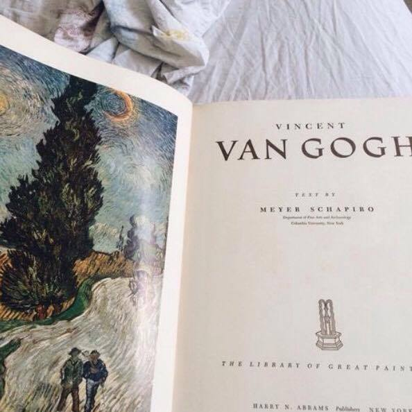

ABOUT ME



JHENINA STA. CRUZ
SINCE '98
MY PASSIONS
  
Writing, poetry, photography and styling
Whenever I engage into these passions, it feeds my soul. It makes me happier than ever. With writing, I am able to express myself and my emotions through poetry. And with that I believe that every photo tells a story. So with every capture I take, there is a bliss of emotion behind it. With styling, it makes me feel better since I own a clothing line, fashion is a prerequisite. It's like forming something simple to art. These passions expanded my way of thinking and enhanced my creativity.
MY HOBBIES
Playing the guitar and drums, fitness aka badminton, reading books
I do lots of things in my pastime so I make sure to be productive always so first of all, I engage with my favorite sport: Badminton. I learned a few years back and from time to time, I join competitions in our place and I am blessed by taking home the bacon at times. I learned the art of hardwork and sacrifice, even at the times you want to give up you should push yourself. Also, I love music. I immediately had a connection with the guitar. Plus I'm a huge book addict! The art of reading books will not be denied.